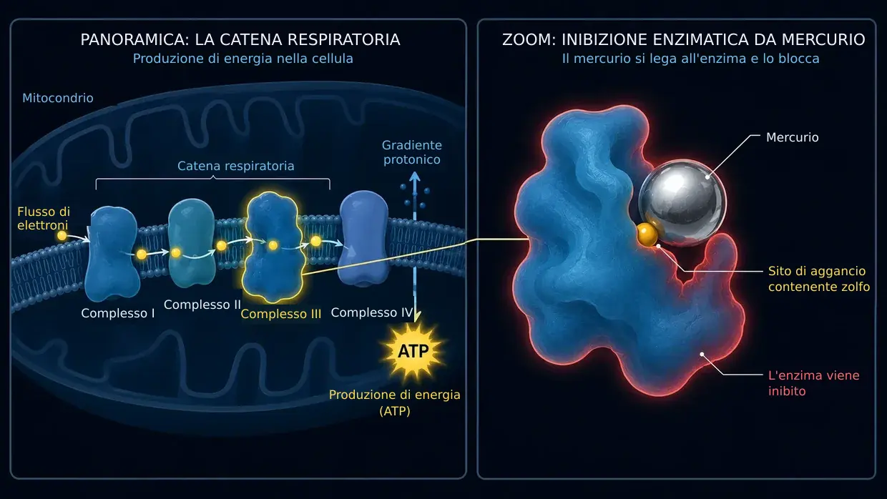

Acufene da farmaci e sostanze tossiche (ototossicità)
Ultimo aggiornamento: giugno 2026
Anch'io all'epoca soffrivo di un acufene estremo, infernale. Nel mio caso, però, l'acufene era dovuto esclusivamente al rumore (e non a un evento acuto legato a un farmaco); quel suono costante era comunque esattamente lo stesso attacco permanente ai miei nervi, al mio sonno e a tutta la mia vita. Anche a me i medici hanno detto spesso che dovevo semplicemente imparare a conviverci.
Scrivo questo articolo sugli inneschi chimici perché nella mia ricerca personale il tema ha avuto un peso importante. Dal 2012 mi sono occupato intensamente di biochimica cellulare – anche nell'ambito della tossicologia e della medicina ambientale. Ed è proprio qui che il cerchio si chiude: nella pratica dei medici di medicina ambientale (come, per esempio, il dott. Klinghardt o il dott. Mutter) si osserva infatti spesso un fenomeno affascinante. Quando nelle persone con acufene è presente un carico nascosto di sostanze tossiche o metalli pesanti come fattore determinante, una disintossicazione cellulare mirata può spesso portare a una riduzione netta o percepibile dei rumori nell'orecchio. Quello che condivido qui è il punto a cui sono arrivato con questa ricerca – e la base per gli approcci alla soluzione che, sulla base di queste ricerche, tratteremo più avanti su questo sito.
L'attacco chimico dall'interno
Quando pensiamo all'acufene, di solito ci vengono subito in mente due immagini: il concerto che rimbomba (il rumore) oppure lo stress massiccio, o lo stress interiore da trauma (la psicosomatica). Esiste però un terzo innesco, che non è né meccanico né emotivo, ma puramente chimico: l'acufene da farmaci e sostanze tossiche. Secondo la mia interpretazione, questo tipo di acufene è tra i meno diffusi – ma per completezza vorrei esporre anche il mio punto di vista su questo terzo innesco. In gergo tecnico si chiama ototossicità (tradotto: «tossicità per l'orecchio»).
A prima vista può sembrare astratto, ma il nostro orecchio interno è estremamente sensibile ad alcune sostanze chimiche. Alcuni farmaci o alcune sostanze tossiche ambientali possono raggiungere direttamente l'orecchio interno attraverso il sangue e lì irritare o persino danneggiare le delicate cellule ciliate o il nervo uditivo.
Il meccanismo: come la chimica genera suoni
Ricordiamo il canale ionico sulla punta delle ciglia, che dopo un sovraccarico rimane permanentemente troppo aperto e non si chiude più correttamente – come già spiegato nella mia sottopagina sull'acufene da rumore. In caso di trauma da rumore, la forza meccanica delle onde sonore modifica la posizione geometrica delle sottili stereociglia.
Con l'acufene da farmaci e sostanze tossiche alla fine succede spesso qualcosa di molto simile, solo che la strada per arrivarci è un'altra. In fondo bisogna immaginare ogni singola cellula ciliata dell'orecchio come una piccola batteria biologica. Mantiene un equilibrio finissimo fatto di energia (ATP), minerali e tensione elettrica.
Le sostanze tossiche ambientali o le dosi tossiche di farmaci possono alterare questo delicato equilibrio compromettendo pesantemente la funzione delle centrali energetiche cellulari – i mitocondri, in termini tecnici. A livello cellulare, secondo la mia comprensione della biochimica, accade allora quanto segue:
Poiché i mitocondri sono indispensabili per l'approvvigionamento energetico della cellula, il suo livello di energia – ossia il livello di ATP – diminuisce di conseguenza. Le minuscole pompe nella parete cellulare consumano continuamente ATP – ossia energia cellulare – per svolgere il proprio lavoro e semplicemente non riescono più a funzionare abbastanza in fretta da mantenere l'equilibrio chimico. Di conseguenza il calcio si accumula dentro la cellula. E siccome in biologia il calcio è l'innesco diretto della trasmissione dello stimolo, questo eccesso di ioni costringe la cellula a sparare «segnali errati» in continuazione e senza controllo. Per me non è una coincidenza misteriosa, ma un logico automatismo biochimico. Il cervello percepisce questo fuoco elettrico continuo come un rumore.
Quale suono senti esattamente – un fischio acuto, un sibilo o un ronzio basso – dipende perlopiù semplicemente dal punto preciso della coclea in cui si trovano le cellule ciliate colpite. In quel momento l'orecchio di solito non viene distrutto fisicamente, ma il suo delicato ordine interno perde il proprio ritmo.
I cortocircuiti elettrici (il nervo uditivo)
Non sono in pericolo solo le cellule ciliate, ma anche il «cavo della corrente» in sé – il nervo uditivo. Questo nervo è avvolto da un rivestimento protettivo, la mielina. Questo strato isolante è ricchissimo di grassi e minerali e proprio per questo è particolarmente sensibile alle sostanze tossiche che circolano nel sangue. Se lo stress chimico indebolisce o «assottiglia» questo rivestimento, il nervo non trasmette più i segnali in modo pulito. Si formano veri e propri «cortocircuiti» elettrici.
E qui si vede la pura logica della nostra anatomia: il nostro nervo uditivo non è un semplice filo singolo, ma un grosso fascio composto da migliaia di minuscole fibre nervose. Ognuna di queste fibre è responsabile della trasmissione di un'altezza tonale ben precisa. Se il cortocircuito tossico (la degradazione della mielina) si forma proprio sulla fibra responsabile delle frequenze alte, il tuo cervello registra logicamente un fischio acuto. Se invece è colpita una fibra dei toni bassi, senti un ronzio profondo. Quindi il fruscio, il sibilo o il fischio che percepisci non è affatto un caso – dipende in modo determinante dal minuscolo punto del cavo principale in cui l'isolamento è stato danneggiato.
La legge universale dell'acufene
Mettendo insieme tutti questi pezzi del puzzle, emerge un denominatore centrale: secondo la mia più profonda convinzione e la mia esperienza, l'acufene è in definitiva il risultato di nervi coinvolti nell'elaborazione uditiva cronicamente irritati e sovraeccitati. Dal punto di vista fisico è quasi irrilevante da dove parta esattamente questa ipereccitazione:
- Che siano le cellule ciliate a restare bloccate in modalità d'emergenza (per il rumore o per i farmaci) e a inondare senza sosta il nervo uditivo di glutammato…
- Che siano le sostanze tossiche ambientali e i metalli pesanti ad aggredire l'isolamento dei nervi (la mielina) e a provocare lì cortocircuiti diretti…
- Oppure che sia uno stress psicosomatico massiccio e cronico ad accumularsi nel cervello e a mantenere costantemente sotto tensione i centri di elaborazione uditiva, praticamente «dall'alto»…
Una volta capita questa logica universale, l'acufene perde spesso del tutto il suo terrore mistico.
Il risultato finale, secondo la mia esperienza, è quasi sempre esattamente lo stesso: il sistema nervoso in quella zona è cronicamente irritato e manda un SOS elettrico a raffica continua. Una volta capita questa logica universale, l'acufene perde spesso del tutto il suo terrore mistico – e la strada verso la soluzione diventa all'improvviso limpida.
Gli inneschi tipici (le sostanze ototossiche)
Ma ok, andiamo avanti: esiste tutta una serie di sostanze note per il loro potenziale effetto ototossico. (Importante: non è una lista medica per l'autodiagnosi, ma serve soltanto alla comprensione generale!)
1. I farmaci
Alcuni preparati possono sovraeccitare l'orecchio interno. Non basta però conoscerne i nomi – bisogna capire perché fanno deragliare il sistema. Solo se comprendiamo la meccanica del danno, il nostro approccio successivo (energia cellulare e disintossicazione) ha davvero senso. Tra i gruppi più noti rientrano:
Antidolorifici ad alte dosi (soprattutto aspirina / acido acetilsalicilico)
Per cominciare, una rassicurazione: una comune compressa per il mal di testa di norma non provoca l'acufene. Secondo la ricerca, spesso si osserva un netto paradosso legato alla dose. Di solito diventa pericoloso soltanto a dosi davvero tossiche ed elevate (spesso diversi grammi al giorno). Quando ciò accade, i modelli farmacologici indicano che il farmaco scatena nell'orecchio interno una reazione a catena in tre passaggi:
- Il motore perde colpi: si ritiene che il principio attivo blocchi la prestina, una proteina minuscola che nelle cellule ciliate esterne lavora come un motore. Così l'amplificatore acustico dell'orecchio crolla. Come reazione di panico, il cervello porta spesso al massimo la sua «manopola del volume» centrale (central gain), pur di sentire ancora qualcosa.
- L'ipersensibilità dei nervi: allo stesso tempo i modelli indicano che il farmaco aumenta l'eccitabilità dei recettori del nervo uditivo. La soglia di stimolo si abbassa e il sistema nervoso reagisce in modo molto più sensibile già ai segnali più piccoli.
- Il blackout (l'innesco): secondo la ricerca biochimica, ad alte dosi l'aspirina agisce da «disaccoppiante» nei mitocondri. In pratica stacca simbolicamente la spina alla cellula (carenza di ATP). Ed è proprio qui che sta la differenza affascinante e logica rispetto al trauma acustico: con il rumore le sottili ciglia della cellula vengono letteralmente piegate dalla forza meccanica. Così il canale del calcio resta aperto in permanenza, come una porta che si inceppa, e il calcio entra senza freni. Con il sovradosaggio di aspirina questo non succede. Le ciglia restano al loro posto, del tutto intatte. Qui è «solo» la chimica ad andare fuori equilibrio. Di calcio non ne entra affatto più del solito – ma con quel crollo rapido di energia le minuscole pompe del calcio della cellula non riescono più a buttarlo fuori. In quel momento la cellula è semplicemente del tutto sopraffatta da un apporto normale di calcio. Il risultato alla fine è lo stesso: il calcio si accumula all'interno e costringe la cellula a rilasciare senza sosta il messaggero chimico glutammato.
Il possibile risultato sul piano dell'acufene: questa ondata incontrollata di glutammato investe nervi con una soglia di stimolo già abbassata (passaggio 2) e viene inviata a un cervello la cui manopola del volume è al massimo (passaggio 1). Nasce un fuoco continuo assordante. E proprio questa semplice logica cellulare spiega anche un fenomeno quotidiano per il quale spesso persino molti medici non hanno una risposta convincente: perché lo zio che per una settimana ha assunto un sovradosaggio massiccio di aspirina, dopo averla sospesa ritrova spesso la quiete nell'orecchio già dopo poco tempo, mentre il nipote di 26 anni, che è stato soltanto due volte in una discoteca rumorosa, soffre da quattro mesi di un acufene che semplicemente non se ne va? Per me la risposta è chiarissima: nello zio si trattava di un blackout biochimico, associato a un'ipersensibilità del nervo uditivo. Non appena il farmaco viene sospeso d'accordo con il medico ed eliminato dall'organismo, le centrali energetiche cellulari possono tornare a funzionare nella loro normale modalità fisiologica. Le pompe ricevono così di nuovo l'energia necessaria, possono rimuovere il calcio in eccesso e il sistema può tornare a funzionare senza errori. Nel nipote della discoteca, invece, c'è stata una brutale azione meccanica. Secondo le mie ricerche e la mia comprensione, le sue sottili stereociglia si trovano poi in una posizione geometrica alterata: alcune sono inclinate di più, altre di meno. Di conseguenza, i canali ionici restano permanentemente più aperti, cosicché, anche a parità di apporto energetico, nella cellula entra più calcio di quanto fisiologicamente previsto. È come se si fosse piegata con la forza bruta la cerniera di una porta. E questo, logicamente, non si ripara da solo in un fine settimana soltanto perché il rumore è cessato – trovi maggiori informazioni nella mia sottopagina sull'acufene da rumore.
Certi antibiotici (gli aminoglicosidi)
Questi potenti antibiotici vengono impiegati di solito soltanto in ospedale in caso di gravi infezioni batteriche (per esempio la gentamicina). Hanno una caratteristica estremamente insidiosa: spesso si accumulano in modo mirato nel liquido dell'orecchio interno e da lì vengono smaltiti con una lentezza esasperante – possono rimanervi per settimane o mesi. Lì reagiscono con il ferro presente nel corpo e generano un'esplosione massiccia di «radicali liberi» (ROS). È come un incendio biochimico che si propaga e aggredisce le delicate membrane cellulari e l'impalcatura interna di actina delle ciglia. Qui vale una semplice logica biologica con due esiti:
- Esito 1 (la morte della cellula): se in quel momento il corpo è comunque già indebolito, ha pochissime riserve di nutrienti o presenta danni pregressi, sotto quell'incendio chimico la cellula crolla del tutto e muore (apoptosi). Il risultato è paradossale: in questo caso di solito l'acufene non insorge. Una cellula morta non trasmette più. Al suo posto si produce una pura e silenziosa perdita dell'udito (sordità) esattamente a quella frequenza.
- Esito 2 (la lotta per sopravvivere = l'acufene): la cellula sopravvive all'attacco per un soffio, ma resta gravemente danneggiata nella struttura. In fondo è esattamente come un trauma acustico, solo innescato per via puramente chimica. Il rigido scheletro interno (l'actina) collassa e le ciglia appassiscono come fiori senz'acqua. Ma la cellula è ancora viva! E siccome è viva, prova disperatamente a combattere contro il calcio che entra dalla membrana ormai bucata. E dato che quell'afflusso di ioni costituisce l'ordine chimico diretto per la trasmissione dello stimolo, la cellula gravemente danneggiata è costretta a sparare senza sosta il messaggero chimico glutammato al nervo uditivo, in modalità panico permanente. Da questa lotta cellulare per la sopravvivenza nasce un fuoco elettrico continuo – ed è esattamente ciò che percepisci come acufene.
I diuretici (potenti compresse per eliminare i liquidi)
I cosiddetti diuretici dell'ansa non sottraggono al corpo soltanto acqua, ma provocano anche una massiccia eliminazione di elettroliti come potassio e sodio. Il problema? L'orecchio interno possiede una propria piccola fonte di tensione, la stria vascularis. Questo strato di tessuto pompa senza sosta potassio nel liquido dell'orecchio per mantenervi una tensione elettrica costante – è la batteria da cui le cellule ciliate ricavano la corrente necessaria all'udito. I diuretici bloccano esattamente questo meccanismo biochimico di pompaggio. Di conseguenza, la tensione elettrica nell'orecchio crolla drasticamente. La batteria biologica è improvvisamente «scarica» e il sistema uditivo entra in uno stato di allarme caotico, che si manifesta come fruscio o fischio.
I chemioterapici (come il cisplatino)
Questi farmaci antitumorali aggressivi si basano spesso sul platino (un metallo pesante). Sono programmati per intervenire sul DNA delle cellule. Se però questo farmaco dà origine a un acufene, secondo i modelli farmacologici ciò dipende da un vero incendio biochimico nell'orecchio interno: in quel caso il cisplatino priva completamente la cellula della sua sostanza protettiva più importante (il glutatione). Senza quello scudo i radicali liberi scavano buchi microscopici nella membrana cellulare e distruggono le pompe ioniche. Il risultato è uno squilibrio ionico estremo: il calcio inonda la cellula e la costringe a sparare glutammato in continuazione. Allo stesso tempo il cisplatino è fortemente neurotossico e disgrega letteralmente la guaina mielinica (l'isolamento) del nervo uditivo. Quando il fuoco continuo della cellula danneggiata investe un nervo non protetto e messo a nudo, si generano veri cortocircuiti misurabili e scariche errate direttamente sul cavo principale che porta al cervello. Anche qui vale il bivio biologico dell'acufene: se la cellula viene distrutta del tutto (apoptosi), di solito resta il silenzio (la sordità). Se invece sopravvive come rudere gravemente danneggiato, con membrane che perdono e nervi scoperti, spesso spara un segnale di disturbo permanente. Questo spiega perché l'acufene da chemioterapia è spesso estremamente ostinato.
Il chinino (antimalarici e preparati contro i crampi muscolari)
Il chinino ha un forte effetto vasocostrittore. L'orecchio interno è un vero e proprio vicolo cieco anatomico – riceve sangue da un'unica minuscola arteria (l'arteria labirintica). Lì non esistono «deviazioni». Quando il chinino restringe questa minuscola arteria e allo stesso tempo rende meno flessibili i globuli rossi, il flusso sanguigno si inceppa. Le cellule ciliate restano tagliate fuori dall'apporto assolutamente necessario di ossigeno e sostanze nutritive. Entrano in grave affanno e passano immediatamente alla modalità «panico-acufene».
2. Metalli pesanti e sostanze tossiche ambientali
Metalli pesanti come mercurio, piombo, alluminio, cadmio e altri agiscono a livello cellulare come sabotatori estremamente aggressivi. Chi si è occupato di protocolli di disintossicazione approfonditi lo sa: non avvelenano le cellule dell'orecchio interno semplicemente in modo diffuso, ma si inseriscono esattamente nei processi biologici e li bloccano. Nella coclea e sul nervo uditivo questo avviene attraverso quattro meccanismi estremamente distruttivi:
- 01Cavallo di Troia
- 02Hack dei tioli
- 03Palla da demolizione
- 04Tritamielina
Meccanismo 1: il cavallo di Troia (lo spiazzamento degli oligoelementi)
Metalli come il cadmio, il mercurio e altri hanno spesso una somiglianza chimica sorprendente con oligoelementi vitali – soprattutto con lo zinco e il selenio. Il corpo si lascia ingannare e incorpora il metallo pesante nelle proteine al posto dello zinco. Il risultato è fatale: sui recettori del nervo uditivo lo zinco funziona infatti come una specie di «freno» naturale. Fa in modo che il nervo non reagisca in modo esagerato a ogni minimo stimolo. Se quello zinco viene spiazzato da un metallo pesante, quel freno salta del tutto. I segnali acustici irrompono senza freni nel sistema nervoso, il che, secondo la mia esperienza, si manifesta come un acufene assordante. Allo stesso tempo lo spiazzamento del selenio disturba pesantemente la produzione dell'antiossidante più importante prodotto dall'organismo (il glutatione). La protezione della cellula rischia di crollare.
Meccanismo 2: l'hack dei tioli (la deformazione delle proteine)

I metalli pesanti hanno inoltre un'enorme preferenza chimica per lo zolfo. La maggior parte dei nostri enzimi e delle minuscole pompe cellulari (come le pompe del calcio alimentate dall'ATP) ha siti di aggancio contenenti zolfo, i cosiddetti gruppi tiolici (-SH). Quando il metallo pesante arriva nell'orecchio interno, si attacca subito a questi gruppi contenenti zolfo. Nel momento in cui il metallo si lega all'enzima, costringe la proteina a cambiare la propria struttura tridimensionale – si deforma letteralmente. Così la pompa del calcio della cellula ciliata si blocca e smette di funzionare.
Meccanismo 3: la palla da demolizione biologica (distruzione diretta della cellula)
Oltre a sabotare le pompe, i metalli aggrediscono l'hardware della cellula anche in modo diretto e fisico. Il piombo e il cadmio entrano nei mitocondri (le centrali energetiche della cellula), si inseriscono nella catena respiratoria cellulare e strozzano pesantemente la produzione di ATP. La cellula rischia, per usare un'immagine, di soffocare dall'interno. Allo stesso tempo nell'orecchio i metalli scatenano un'esplosione di radicali liberi che ossidano letteralmente il rivestimento protettivo ricco di grassi (la membrana) della cellula ciliata – diventa rancida, si scioglie e si riempie di buchi (perossidazione lipidica). Il calcio tossico si riversa all'interno come attraverso una diga rotta. In più i metalli attaccano l'impalcatura proteica rigida (l'actina) dentro le minuscole ciglia sensoriali. I ponti molecolari cedono, le ciglia appassiscono, si piegano bruscamente e bloccano i canali ionici in posizione permanentemente aperta.
Meccanismo 4: il tritamielina (l'attacco al cavo principale)
I metalli pesanti si mangiano anche il cavo stesso – il nervo uditivo – e distruggono il suo strato isolante, la mielina. Questo strato è costituito quasi per l'80% da grassi, il che ne fa la vittima perfetta per lo stress ossidativo. I radicali liberi corrodono letteralmente il grasso. Il mercurio, per esempio, si lega alla «proteina basica della mielina», la colla molecolare dello strato isolante, che così si sfalda. Il piombo, in tossicologia, è fortemente sospettato di andare ancora oltre e di danneggiare in modo mirato le cosiddette cellule di Schwann – i minuscoli operai che dovrebbero riparare la mielina. Senza isolamento, i segnali elettrici dell'udito rallentano moltissimo, saltano su fibre nervose vicine e scoperte (cross-talk) e generano massicce scariche errate.
-
01Ingresso chimico
Un farmaco a dose tossica elevata oppure un metallo pesante o una sostanza tossica ambientale raggiunge l'orecchio interno attraverso il sangue.
-
02L'equilibrio salta
L'ATP cala, le pompe non riescono più a funzionare abbastanza rapidamente, il calcio si accumula dentro la cellula, la mielina si assottiglia.
-
03Segnale errato continuo
La cellula indebolita spara glutammato senza sosta, oppure i segnali saltano sulle fibre vicine – e il cervello percepisce questi segnali come un suono.
Ma allora perché non tutti hanno l'acufene? (La lotteria dei metalli pesanti e la tempesta perfetta)
A questo punto viene fuori una domanda logica: se il mercurio (dal pesce o dall'amalgama), il piombo (dalle vecchie tubature) e compagnia fanno danni così devastanti, perché mezza umanità non si ritrova con l'acufene subito dopo una pizza al tonno? La risposta sta nei nostri scudi protettivi interni e in una vera lotteria biologica – e nel fatto che un acufene non nasce quasi mai da un unico fattore isolato.
1. La lotteria tossicologica (il punto debole locale):
I metalli pesanti non hanno un GPS integrato che punta all'orecchio. Circolano alla cieca nel sangue e cercano il punto di minor resistenza (locus minoris resistentiae). Il luogo in cui si depositano è spesso frutto del puro caso e dipende da dove il tuo corpo presenta in quel momento un punto debole. Se, per esempio, di notte digrigni forte i denti o hai un'infiammazione silente nella zona tra collo e mandibola, la permeabilità vascolare intorno all'orecchio è enormemente elevata. La cosiddetta barriera emato-labirintica, quella che dovrebbe proteggere l'orecchio, resta allora spalancata. Il mercurio trova quella porta aperta e si deposita esattamente lì, sul nervo uditivo, mentre in un'altra persona magari passa semplicemente oltre.
2. La discarica interna, lo scudo del glutatione e il deposito di partenza:
Un corpo sano produce nel fegato grandi quantità di glutatione – una molecola che lega i metalli pesanti come con delle manette e li elimina prima che raggiungano l'orecchio. Ma qui entra in gioco la dura realtà dell'apporto: alcune persone – spesso senza esserne minimamente consapevoli – entrano in contatto con quantità di metalli pesanti enormemente maggiori rispetto ad altre. Ciò può avvenire attraverso l'aria contaminata che respirano, vecchie otturazioni in amalgama in bocca, il posto di lavoro, il fumo, alimenti contenenti metalli pesanti o il contatto costante con oggetti di uso quotidiano contaminati. Alla fine si tratta sempre di un quadro tossico misto, risultante dalla quantità assoluta dell'apporto e dalla capacità dell'organismo di legare ed eliminare queste sostanze tossiche. Se l'organismo non ci riesce, spesso deposita le sostanze tossiche in «discariche» apparentemente sicure (come le ossa o il classico tessuto adiposo), per sottrarle al circolo sanguigno. Ed è proprio qui che si nasconde una trappola biologica fatale per il nostro udito: il nostro sistema nervoso – e in modo del tutto particolare la guaina mielinica che isola il nervo uditivo – è costituito quasi per l'80% da grassi puri. Quando quindi l'organismo cerca disperatamente di «parcheggiare temporaneamente» nel tessuto adiposo i metalli pesanti lipofili (liposolubili), nello sfortunato gioco della lotteria vengono spesso colpiti proprio questo tessuto nervoso altamente sensibile o le strutture intorno alle cellule ciliate.
A ciò si aggiunge un duro dato biologico, spesso taciuto: molte persone entrano in questa lotteria tossica già il giorno della nascita con un deposito pieno. Perché? Perché gli studi suggeriscono che durante la gravidanza le madri trasferiscano al feto, attraverso la placenta, una parte dei propri depositi di metalli pesanti accumulati nel corso degli anni. In alcune persone, quindi, il «vaso» cellulare è già nettamente più pieno fin dall'inizio.
Diventa infine pericoloso quando questo sistema di protezione cede: a causa di stress estremo, fattori genetici o carenza di nutrienti, la disintossicazione si ritrova improvvisamente al limite. Le discariche dell'organismo si aprono oppure la sostanza tossica appena arrivata non viene nemmeno intercettata, circola nel sangue e cerca – come nella lotteria già menzionata – inevitabilmente il suo punto debole nell'organismo.
3. La combinazione fatale (la tempesta perfetta):
Nella realtà biologica qui vediamo però spesso un quadro misto estremamente complesso – e questo toglie di mezzo anche l'equivoco per cui chiunque si ritrovi con un acufene dopo un evento rumoroso debba per forza essere completamente intossicato da metalli pesanti. Non è così.
Spesso accade invece quanto segue: una persona porta già con sé, a causa di sostanze tossiche ambientali o metalli pesanti, un certo carico tossico di base nelle cellule ciliate, nei loro mitocondri o direttamente sul nervo uditivo. La guaina mielinica può essere già leggermente assottigliata, le pompe del calcio sono già piuttosto vicine al limite e, più in generale, le cellule lavorano ormai proprio al limite. Questo, da solo, spesso non provoca ancora alcun acufene permanente. Il tuo corpo lo compensa e resta a malapena in equilibrio, come su un filo.
Poi però si aggiunge la combinazione che la vita può creare: entri in una fase di stress cronico estremo. Gli ormoni dello stress (adrenalina/cortisolo) restringono i vasi sanguigni, riducono drasticamente l'afflusso di sangue nell'orecchio e ti privano del sonno ristoratore. Di notte il sistema non riesce più a rigenerarsi. Se proprio in questo stato altamente vulnerabile sei anche esposto a un evento rumoroso (che si tratti di un picco acuto di rumore o di un'esposizione sonora cronica e continua), allora il sistema cede definitivamente in qualche punto di questa catena. L'hardware già danneggiato semplicemente non riesce più ad attutire questa forza meccanica. L'equilibrio ionico crolla, l'impalcatura di actina collassa oppure la guaina mielinica cede definitivamente – e possono nascere segnali elettrici continui.
Dal mio punto di vista è la combinazione fatale: la sostanza tossica provoca il graduale indebolimento dell'hardware, lo stress interrompe l'apporto di ossigeno e il rumore è poi spesso soltanto la goccia finale che fa traboccare un vaso cellulare già pieno fino all'orlo.
Secondo me, all'altro capo dello spettro esiste naturalmente anche l'acufene scatenato puramente da farmaci tossici o da un'intossicazione massiccia da metalli pesanti. Se la dose chimica è abbastanza alta (per esempio con una chemioterapia aggressiva o un'intossicazione acuta), non serve assolutamente nessuna «tempesta perfetta» e nemmeno un ulteriore evento rumoroso. In questi casi la sostanza tossica è del tutto sufficiente, da sola, a mettere fuori uso le centrali energetiche della cellula o a danneggiare i nervi.
Perché l'acufene da sostanze tossiche (metalli pesanti e pesticidi) è spesso così ostinato
Chi evita il rumore arresta immediatamente il fattore scatenante. Con l'acufene da sostanze tossiche – e qui intendo concretamente l'esposizione a vere sostanze tossiche ambientali, pesticidi o metalli pesanti – la situazione è spesso molto più complicata. Questa forma diventa infatti così estremamente tenace e ostinata soprattutto quando queste sostanze risultano effettivamente il meccanismo principale o un fattore importante nel fenomeno dell'acufene. Il motivo è che si depositano letteralmente in profondità nel tessuto nervoso e nelle cellule. Non scompaiono semplicemente dal circolo sanguigno dopo qualche ora come un comune antidolorifico. Si aggrappano, e spesso l'organismo riesce a espellere queste tossine tenaci soltanto con enorme fatica, con estrema lentezza e nel corso di un lungo periodo.
Che fare?
E che cosa si può fare adesso? I riscontri scientifici e legati alla pratica relativi ai meccanismi descritti qui si trovano sulla mia pagina delle fonti. Chi desidera approfondire e sapere che cosa, a mio parere e secondo la mia esperienza, aiuta concretamente in caso di acufene da farmaci e sostanze tossiche, può semplicemente fare clic sul link qui sotto:
Avviso importante
Non sospendere mai di tua iniziativa farmaci soggetti a prescrizione! In caso di rumori nell'orecchio in relazione all'assunzione di farmaci – soprattutto se insorti in forma acuta – consulta tempestivamente un medico per chiarire come procedere. Qualsiasi modifica della terapia farmacologica deve avvenire sotto controllo medico.
I contenuti, i modelli esplicativi e le strategie che condivido su questo sito non sono una consulenza medica, bensì il mio resoconto personale e la mia ricerca. Ogni corpo è a sé. Non sono un medico e non prometto nessuna guarigione. In caso di disturbi di salute rivolgiti a un medico qualificato. Chi mette in pratica gli approcci descritti qui lo fa sotto la propria responsabilità.